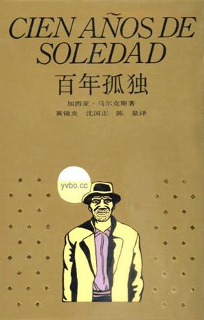

<div ng-controller="homeController">
    <div class="weui-img-box main_book_top" >
        <div class="weui-img" style="background-image:url(../../static/img/shuzhanggui.png);"></div>
        <!--搜索框-->
        <div class="weui-search-bar" id="main_searchBar">
            <form class="weui-search-bar__form">
                <div class="weui-search-bar__box">
                    <i class="weui-icon-search"></i>
                    <input type="search" class="weui-search-bar__input" id="main_searchInput" placeholder="搜索" required=""/>
                    <a href="javascript:" class="weui-icon-clear" id="main_searchClear"></a>
                </div>
                <label class="weui-search-bar__label" id="main_searchText">
                    <i class="weui-icon-search"></i>
                    <span>大家一起搜</span>
                </label>
            </form>
            <a href="javascript:" class="weui-search-bar__cancel-btn" id="main_searchCancel">取消</a>
        </div>
        <div class="weui-img-masker">
            <div class="weui-img-title" >书掌柜<br>
                <span class="weui-img-time">2017-05-05</span>
            </div>
        </div>
    </div>
    <script>
        $(function(){
            /*搜索框*/
            var topmain=$(".main_book_top").height()+10;
            $(window).scroll(function() {
                /*alert("success");*/
                if($(window).scrollTop() > topmain) {
                    $('#main_searchBar').css('display','block')
                } else {
                    $('#main_searchBar').css('display','none')
                }

            });
        });
    </script>
    <div class="home_container">
    <!--图书导航-->
    <div id="tagnav" class="weui-navigator weui-navigator-wrapper">
        <ul class="weui-navigator-list" ng-init='activeTab=1'>
            <li ng-class='{active:activeTab==1}'
                ng-click='activeTab=1'><a ui-sref="index.home.wenhua">文化</a></li>
            <li ng-class='{active:activeTab==2}'
                ng-click='activeTab=2'><a ui-sref="index.home.jingguan">财经管理</a></li>
            <li ng-class='{active:activeTab==3}'
                ng-click='activeTab=3'><a ui-sref="index.home.yishu">艺术</a></li>
            <li ng-class='{active:activeTab==4}'
                ng-click='activeTab=4'><a ui-sref="index.home.wenxue">文学小说</a></li>
            <li ng-class='{active:activeTab==5}'
                ng-click='activeTab=5'><a ui-sref="index.home.keji">科技</a></li>
            <li ng-class='{active:activeTab==6}'
                ng-click='activeTab=6'><a ui-sref="index.home.shenghuo">生活</a></li>
            <li ng-class='{active:activeTab==7}'
                ng-click='activeTab=7'><a ui-sref="index.home.qingchun">青春励志</a></li>
            <li ng-class='{active:activeTab==8}'
                ng-click='activeTab=8'><a ui-sref="./morehotbook.html">更多</a></li>
        </ul>
    </div>
        <div class="home_tab_panel">
            <div ng-if='activeTab==1'>
                <!--推荐阅读-->
                <div class="weui-form-preview home_recommend_book">
                    
                    <div class="weui-form-preview-hd">
                        <label class="weui-form-preview-label">推荐阅读</label>
                        <i class="demo-icon fa-th-list"></i>
                    </div>
                    <ul>
                        <li>
                            <div class="weui-form-preview-bd">
                                <div class="home_recommend_img">
                                    
                                </div>
                                <div class="home_recommend_info">
                                    <label class="weui-form-preview-label">追疯子的人</label>
                                    <span class="weui-form-preview-value">12岁的阿富汗富家少爷阿米尔与仆人哈桑情同手足。然而，在一场风筝比赛后，发生了一件悲惨不堪的事，阿米尔为自己的懦弱感到自责和痛苦，逼走了哈桑，不久，自己也跟随父亲逃往美国。成年后的阿米尔始终无法原谅自己当年对哈桑的背叛。为了赎罪，阿米尔再度踏上暌违二十多年的故乡，希望能为不幸的好友尽最后一点心力，却发现一个惊天谎言，儿时的噩梦再度重演，阿米尔该如何抉择？故事如此残忍而又美丽，作者以温暖细腻的笔法勾勒人性的本质与救赎，读来令人荡气回肠。</span>
                                </div>
                            </div>
                            <div class="weui-form-preview-ft" >
                                <a class="weui-form-preview-btn weui-form-preview-btn-primary" href="javascript:">查看详情</a>
                            </div>
                        </li>
                        <li>
                            <div class="weui-form-preview-bd">
                                <div class="home_recommend_img">
                                    
                                </div>
                                <div class="home_recommend_info">
                                    <label class="weui-form-preview-label">追老子的人</label>
                                    <span class="weui-form-preview-value">12岁的阿富汗富家少爷阿米尔与仆人哈桑情同手足。然而，在一场风筝比赛后，发生了一件悲惨不堪的事，阿米尔为自己的懦弱感到自责和痛苦，逼走了哈桑，不久，自己也跟随父亲逃往美国。成年后的阿米尔始终无法原谅自己当年对哈桑的背叛。为了赎罪，阿米尔再度踏上暌违二十多年的故乡，希望能为不幸的好友尽最后一点心力，却发现一个惊天谎言，儿时的噩梦再度重演，阿米尔该如何抉择？故事如此残忍而又美丽，作者以温暖细腻的笔法勾勒人性的本质与救赎，读来令人荡气回肠。</span>
                                </div>
                            </div>
                            <div class="weui-form-preview-ft" >
                                <a class="weui-form-preview-btn weui-form-preview-btn-primary" href="javascript:">查看详情</a>
                            </div>
                        </li>
                        <li>
                            <div class="weui-form-preview-bd">
                                <div class="home_recommend_img">
                                    
                                </div>
                                <div class="home_recommend_info">
                                    <label class="weui-form-preview-label">追你妈妈的人</label>
                                    <span class="weui-form-preview-value">12岁的阿富汗富家少爷阿米尔与仆人哈桑情同手足。然而，在一场风筝比赛后，发生了一件悲惨不堪的事，阿米尔为自己的懦弱感到自责和痛苦，逼走了哈桑，不久，自己也跟随父亲逃往美国。成年后的阿米尔始终无法原谅自己当年对哈桑的背叛。为了赎罪，阿米尔再度踏上暌违二十多年的故乡，希望能为不幸的好友尽最后一点心力，却发现一个惊天谎言，儿时的噩梦再度重演，阿米尔该如何抉择？故事如此残忍而又美丽，作者以温暖细腻的笔法勾勒人性的本质与救赎，读来令人荡气回肠。</span>
                                </div>
                            </div>
                            <div class="weui-form-preview-ft" >
                                <a class="weui-form-preview-btn weui-form-preview-btn-primary" href="javascript:">查看详情</a>
                            </div>
                        </li>
                    </ul>
                    <script>
                        function times() {
                            $('.home_recommend_book ul li').eq(0).hide(function () {
                                $(this).appendTo($(this).parent()).show("slow");
                            })
                        }
                        setInterval('times()', 5000);
                    </script>

                </div>
                <!--图书信息-->
                <a href="../bookDetails.html" ng-repeat="hotArticle in hotArticles">
                    <div class="home_book">
                        <div class="content">
                            <div class="home_book_info">
                                <span class="home_book_titile">{{hotArticle.title}}</span>
                                <div class="home_book__info">{{hotArticle.desc}}</div>
                                <span class="home_book_look">
                                    阅读：{{hotArticle.look_count}} · 可借复本：{{hotArticle.kejiefuben}}
                                </span>
                            </div>
                            <div class="home_book_img">
                                
                            </div>
                        </div>
                    </div>
                </a>
                <a href="../bookDetails.html" ng-repeat="hotArticle in hotArticles">
                    <div class="home_book">
                        <div class="content">
                            <div class="home_book_info">
                                <span class="home_book_titile">{{hotArticle.title}}</span>
                                <div class="home_book__info">{{hotArticle.desc}}</div>
                                <span class="home_book_look">
                                    阅读：{{hotArticle.look_count}} · 可借复本：{{hotArticle.kejiefuben}}
                                </span>
                            </div>
                            <div class="home_book_img">
                                
                            </div>
                        </div>
                    </div>
                </a>
            </div>
            <div ui-view=""></div>
        </div>
    <script src="../../static/js/jquery-2.1.0.js"></script>
    <script src="../../static/js/iscroll.js"></script>
    <script>
        $(function () {
            TagNav('#tagnav', {
                type: 'scrollToFirst',
            });
            $('.weui_tab').tab({
                defaultIndex: 0,
                activeClass: 'weui_bar_item_on',
            });
        })
    </script>
    </div>
</div>

